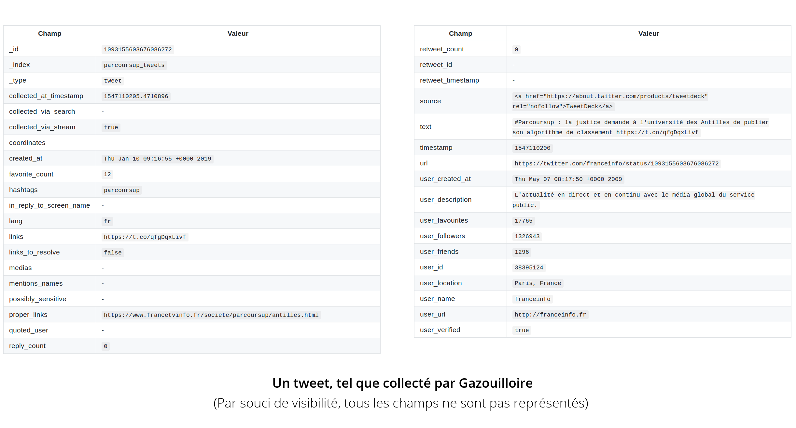
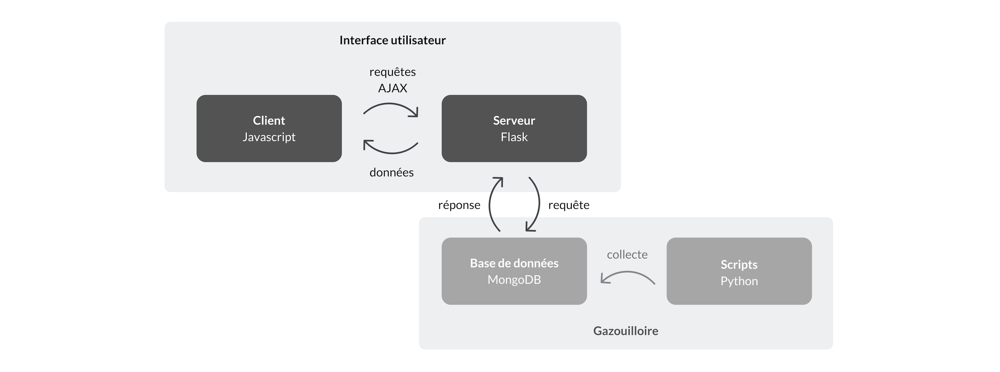
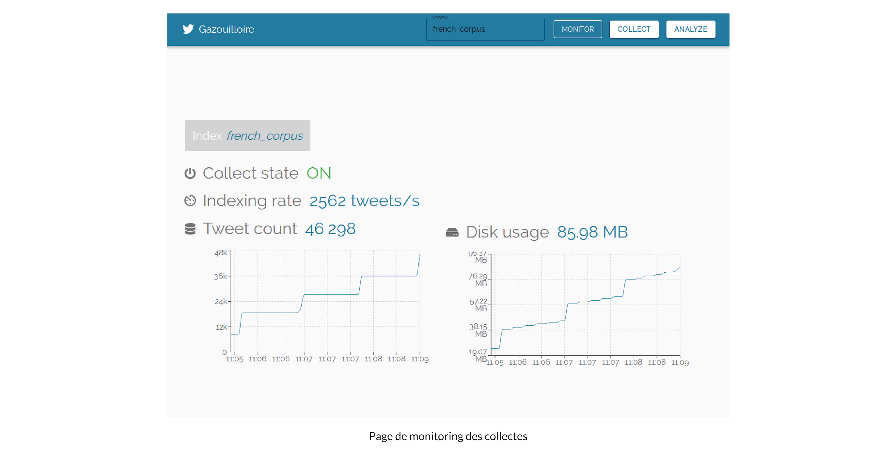
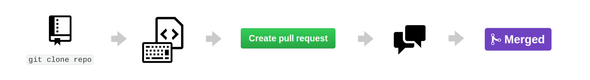

[Notes]
- réflexion sur la mission et la manière dont vous vous êtes organisés
- réflexion sur les choix qui ont été faits
- réflexion sur la portée de vos réalisations, leurs avantages et inconvénients, leur devenir dans l'entreprise
- philosophie de l'open-source (contributions dans les 2 sens)
Résumé : web-mining, open source
title: Document Center
Remerciements
Je tiens tout d'abord à remercier Guillaume Plique et Benjamin Ooghe-Tabanou pour leur très grande disponibilité tout au long du stage et pour tout ce que j'ai appris grâce à eux. Effectuer mon premier stage avec un tuteur du niveau de compétences et de pédagogie de Guillaume
Je remercie Paul et l'équipe de m'avoir fait confiance pour ce stage.
Merci à Barbara, Damien, Robin, Arnaud, Donato, Léna ainsi que toute l'équipe auprès de qui travailler pendant ces six mois fut un plaisir.
// REDIGER REMERCIEMENTS DETAILLES
Sommaire
Résumé technique
Mon stage a principalement consisté en l'amélioration d'outils et de librairies destinées à répondre aux besoins de chercheurs traitant de grandes masses de données issues du web. Les développements ont été principalement réalisés en Python.
// RESUME TECHNIQUE
Introduction
// INTRODUCTION
1. Un Médialab à SciencesPo ?
1.1 Un laboratoire un peu particulier
Le Médialab est un des 10 centres de recherche de SciencesPo. Laboratoire numérique, le Médialab a été fondé en 2009 par le sociologue et philosophe Bruno Latour pour aider les sciences sociales et humaines à tirer le meilleur profit de la masse de données rendues disponibles par la numérisation. Comment perçoit-on/utilise-t-on les données numériques dans la société ? Qu'en fait-on ? Quels outils peut-on créer pour les collecter, les étudier, les exploiter, les visualiser, dans des domaine aussi variés que la sociologie, l'histoire, l'art, l'ingénierie, le design et la pédagogie ? Il en ressort des productions de types très variés et peu courants pour un laboratoire de sciences sociales : aux traditionnels "papiers" s'ajoutent des applis, des outils de collecte, d'exploration, de visualisation des données...
Constituée d'une trentaine de personnes, son équipe se distingue de celles des autres laboratoires de SciencesPo par sa grande diversité : chercheurs en sciences sociales, designers, ingénieurs pédagogiques et développeurs s'y côtoient.
Parmi les projets du laboratoire, on peut citer La Fabrique de la Loi qui propose une visualisation graphique et détaillée des procédures parlementaires, le projet Datapol qui analyse les données numériques de la campagne présidentielle de 2017, ou Dime Web, qui vise à établir un ensemble d'outils open source permettant de collecter des données sur le web et sur les réseaux sociaux (Twitter notamment).
On peut citer comme laboratoires similaires le Digital Methods Initiative d'Amsterdam , l'Oxford Internet Institute, le TANT-Lab danois, ainsi que le MIT Center for Civic Media et le Berkman Klein Center for Internet & Society, qui travaillent notamment sur la suite d'outils Media Cloud répondant aux mêmes types de problématiques abordées par le Médialab. Ces deux laboratoires américains diffèrent cependant du Médialab sur certains points, notamment l'effectif - le Berkman Klein Center compte plus de 200 personnes - et les financements - le médialab du MIT est financé entièrement par des sponsors.
1.2 L'équipe
// A REDIGER
Paul, Guillaume, Benjamin, Jean-Philippe, Robin, Donato, Damien, Audrey, Diego
L'équipe technique du laboratoire se compose d'un directeur technique (Paul Girard), d'ingénieurs de recherche, de designers et de développeurs. L'organisation est très horizontale, et aucune hiérarchie ne transparaît au quotidien, les décisions étant prises en collectif, lors des réunions hebdomadaires et des conseils de laboratoires.
J'ai principalement travaillé avec deux ingénieurs de recherche : mon tuteur Guillaume Plique et Benjamin Ooghe-Tabanou, présents quotidiennement dans le même bureau que le mien.
Donneurs d'ordre ? Comment l'info circule-t-elle ?
Les objectifs de long terme sont déterminés en commun avec mon tuteur, tandis que les tâches annexes et ponctuelles, comme le traitement d'un corpus spécifique, sont principalement définies par mail ou de vive-voix.
Technologies maîtrisées par l'équipe ?
La très grande majorité des outils développés par le laboratoire le sont en Python ou en Javascript. Des frameworks comme React sont utilisés, ainsi que des outils de déploiement et d'intégration comme Gitlab CI, Docker, Rancher. Tous les outils développés le sont en open-source, et sont publiés sur le repo du laboratoire le plus souvent sous licence AGPL-3.0, GPL-3.0 ou MIT.
Méthodes et outils utilisés (agile, git) ? Validation des développements (tests) ?
L'équipe s'organise d'une part via une réunion hebdomadaire de tous les membres du laboratoire, où l'on partage les avancées et projets de chacun et où ont lieux des réflexions plus larges et globales sur le laboratoire, et d'autre part via la réunion technique, bimensuelle. C'est pendant cette réunion technique que sont gérés les projets en cours et à suivre, via une méthode agile.
2. Ma mission
2.1 Le sujet
Sujet initial
Dans le cadre d'un projet de recherche de Dominique Cardon étudiant la polarisation de l'espace médiatique numérique français, le stage porte sur les techniques de récolte de données web (sites, réseaux sociaux) et de visualisation de celles-ci.
La polarisation de l'espace médiatique ? Pour saisir les intentions de ce projet de recherche, il faut partir d'une étude du Berkman Klein Center for Internet & Society sur la campagne présidentielle américaine de 2016. En étudiant la façon dont les médias s'intercitent et la façon dont ils sont partagés en ligne, le laboratoire a conclu à une très forte polarisation, où d'un côté la gauche et le centre se rapprochent quand de l'autre la droite s'éloigne un peu plus vers la droite. Il s'agit en quelque sorte de vérifier de façon empirique, sur de grandes quantitées de données, des hypothèses sociologiques.
Le but de ce projet de recherche du Médialab, qu'on appellera le projet Polarisation dans la suite, est de répliquer cette analyse sur l'espace médiatique français. Comment une polémique d'actualité comme l'affaire Benalla se diffuse au travers des différents médias ? Les mêmes thèmes sont-ils abordés partout ?
Concrètement, cette polarisation s'étudie via la construction de réseaux : on peut par exemple établir un graphe de médias à partir des partages de liens sur les réseaux sociaux. Ainsi, deux médias seront liés si le même profil de personnes les partagent. Un tel graphe permet ensuite d'identifier des groupes, ou pôles, dans l'espace médiatique.

[ Répliquer une étude du Berkman Center : intercitation des médias, comment les gens partagent ces médias, informations révélées apr le réseau, vérifier des hyptohèses sociologiques, Benalla : comment les thèmes d'un sujet se diffusent au travers des différents médias, légitimité des médias ?,
Hypothèse de l'institut Montaigne : aux US grosse polarisation des médias (gauche/droite assez hermétiques), qui s'accentue (Berkman). Hypothèse du directeur de Berkman : la droite s'éloigne (jeu dégueulasse) et le centre
Même chose en France : globalement oui, mais bien moins dramatique. Médias alternatifs très peu considérés
Polarisation : réseaux de co-occurence de tweets (réseau bipartite : 2 types de noeuds : un utilisateur partage un média n fois) réseau de similarité de média par le truchement des utilisateurs
Chaque média est un vecteur de ses utilisateurs -> similarité cosinus
Deux médias seront liés s'ils ont un profil de gens qui les partagent similaire
Problème : on finit par prouver des trucs qu'on savait déjà depuis longtemps en socio]
Afin d'établir ce genre de visualisations, il est nécessaire de collecter et de traiter les données du corpus étudié.
Ses évolutions (et leurs causes)
Les besoins de collecte et de traitement de données étant multiples, j'ai été amené à travailler sur plusieurs outils, répondant chacun à un besoin particulier mais relevant du domaine du web-mining : collecter de grandes quantités de tweets, récupérer des données de partages Facebook, extraire le contenu pertinent d'une page web, normaliser des urls.
Situer le sujet dans les objectifs du labo
Un des objectifs du laboratoire en termes de collecte de données est d'élargir son spectre de sources : les données récoltées proviennent actuellement de pages web (via le crawler Hyphe) et de Twitter (via l'outil Gazouilloire). Une partie importante de l'espace médiatique numérique échappe donc aux outils du laboratoire : Facebook, LinkedIn, Instagram par exemple.
Cahier des charges précis ou participation à son élaboration ?
2.2 Le planning
Vous pouvez présenter le planning initial et le planning réel avec les dates importantes. Quelles ont été les étapes importantes ? Indiquez celles qui auraient été les plus difficiles, les plus intéressantes, etc.
Itérations de 2 semaines.
2.3 Mes contributions
Etat du projet à votre arrivée ? Et à la fin ?
Avez-vous réalisé une étude, une maquette, une preuve de concept, un produit ou une application complète ? Que reste-t-il à faire pour rendre utilisable votre travail ?
2.4 Outils & technologies
Outils, environnements, logiciels
Tout le travail effectué l'a été en Python ou en Javascript. En Python, le gestionnaire d'environnement virtuels pyenv a été utilisé, pour compartimenter la version de Python et les dépendances propres à chaque projet.
Concernant les bases de données, ont été utilisés Elasticsearch (ainsi que son interface de visualisation et de monitoring Kibana) et MongoDB.
Pour le développement d'interfaces, React et material-ui ont été plébiscités, ainsi que Recharts pour la visualisation de données.
Comment les développements ont été vérifiés/testés/validés ?
La plupart des librairies comportent des tests unitaires, qui sont vérifiés grâce au logiciel d'intégration continue Travis CI. Les développements de nouvelles fonctionnalités ont été faits sur des branches dédiées sur git, puis envoyés sous forme de Pull Requests avant d'être mergées à la branche master.
2.5 Prise de recul
Quel a été l'intérêt de votre travail pour l'entreprise ? Que va devenir votre contribution ? Présenter les perspectives. Quelles sont les améliorations à envisager ? Quelle est la maintenance à prévoir sur cette réalisation ou cette application ? Selon les cas, présentez vos réflexions sur l'impact de votre travail sur les utilisateurs, les nouveaux usages, le respect de la vie privée ou de l'environnement...
Amélioration d'outils répondant à des besoins récurrents des chercheurs.
3. Le travail réalisé
Cette partie est la plus longue ; vous y présenterez votre travail. Si besoin, vous pourriez structurer le reste du rapport en plusieurs parties et non une seule. La ou les parties devraient elles-mêmes êtres structurées en plusieurs sous-sections au sein d'une même partie. Dans tous les cas, la logique du plan doit apparaître clairement. Travaillez les liaisons pour aboutir à une lecture fluide. Voici un exemple (un peu exagéré) : "Après avoir inventorié les technologies disponibles dans la section précédente, cette section est consacrée aux expérimentations que nous avons menées avec chacune d'elles. Ce travail nous permettra de sélectionner les technologies retenues, présentées dans la section suivante." Présentez votre réflexion et vos choix, qui devraient être justifiés. Examinez rapidement les autres alternatives. Sélectionnez les détails pertinents et laissez les autres en annexe. Allez du général au particulier. Evitez de présenter un catalogue des fonctions développées.
3.1 Collecter
3.1.1 Twitter
3.1.1.1 Fonctionnement de l'outil Gazouilloire
Pour récolter des tweets, le laboratoire utilise un outil maison, Gazouilloire.
Gazouilloire est un outil de collecte de tweets selon certains critères (mots-clés, hashtag, période, langage...). Imaginons que l'on souhaite étudier la polémique autour de Parcoursup et collecter les tweets liés au sujet ; il suffit de lancer une collecte sur le mot-clé 'parcoursup' . En utilisant une clé d'API Twitter (générée via un compte développeur), l'outil va collecter les tweets contenant ce mot-clé, à la fois en direct (stream) et en remontant dans le passé ( search ). L'API Twitter étant limitée à une dizaine de jours de retour dans le passé, un chercheur souhaitant étudier un sujet sur plusieurs semaines ou plusieurs mois devra faire tourner sa collecte sur la durée souhaitée.
Gazouilloire formate ensuite les champs récupérés pour chaque tweet (plus d'une cinquantaine : contenu texte, hashtags, auteur, date...) et les stocke dans une base de données.

Techniquement, Gazouilloire est un outil écrit en Python 2, faisant appel à une base de données MongoDB.
Mon travail a d'abord consisté à rendre l'outil compatible Python 3, tout en gardant la compatibilité avec Python 2, puis à migrer vers une base de données Elasticsearch.
3.1.1.2 Ébauche d'une interface
Quels besoins ?
Gazouilloire est un outil en ligne de commande, qui se lance donc via un terminal. Les paramètres de la collecte (mots-clés, hashtags, période, ...) sont entrés dans un fichier JSON avant le lancement du programme. Cela le rend difficilement accessible aux chercheurs en sciences sociales qui n'ayant pas de formation en informatique.
En outre, une interface de visualisation rapide des données stockées dans la base de données serait bienvenue, afin d'identifier des tendances ou de repérer d'éventuels problèmes.
Enfin, la possibilité de surveiller l'état des collectes directement dans l'interface faciliterait grandement le suivi de celles-ci.
Quelles technologies ?
Il faut distinguer les différentes composantes nécessaires au fonctionnement de l'interface de l'application.
- un client, qui gère l'interface graphique (développé en Javascript)
- un serveur simple (développé en Python, grâce au framework Flask)
- une base de données (ici, MongoDB)

L'interface utilisateur
Pour le développement de l'interface, le choix d'un librairie comme React se révèle pertinent. Le recours au framework material-ui permet d'utiliser des composants pré-existants à la fois fonctionnels, esthétiques et responsive*.

React est une bibliothèque Javascript libre développée par Facebook qui vise à faciliter la création d'interface d'applications web. Elle est notamment utilisée par Netflix, Yahoo, Airbnb, Sony ainsi que WhatsApp et Instagram (appartenant à Facebook).[^fn1]
React fonctionne par la création de composants réutilisables, possédant chacun un état pouvant évoluer avec le temps. Avec React a été développé un langage, le JSX, hybride entre Javascript et HTML. Le JSX permet de générer des objets Javascript avec une notation similaire à celle du HTML :
xxxxxxxxxxconst element = <h1>Hello, {name}</h1>;Une des particularités de React est l'utilisation d'un DOM* virtuel : plutôt que de regénérer tout le DOM à chaque modification de la page, le DOM est représenté comme une arborescence d'objets Javascript, ce qui permet à React de détecter la moindre modification de la page. Une fois la modification identifiée, React interagit avec le DOM pour ne changer que ce qui est nécessaire.
Dans une perspective d'usages multiples (collecte, analyse et monitoring), l'application se doit de dédier une page (ou onglet) à chacun de ceux-ci. Cela peut se faire via un élément cliquable comme un bouton, dans lequel on indique une url pointant vers la page voulue.

Il reste à afficher le bon contenu lorsqu'on accède à l'url en question.
Cela peut se faire grâce à un routeur comme react-router-dom :
xxxxxxxxxximport {BrowserRouter as Router, Route} from 'react-router-dom';<Router> <Route path="/collect" component={CollectPage} /> <Route path="/analyze" component={AnalyzePage} /> <Route path="/monitor" component={MonitoringPage} /></Router>Ici, CollectPage, AnalyzePage et MonitoringPage sont des composants contenant tous les éléments affichés respectivement sur les pages de collecte, d'analyse et de monitoring.
On souhaite ici afficher des visualisations de données dans le composant AnalyzePage. Il existe pour cela plusieurs librairies Javascript : D3.js, Chart.js, Chartist.js ou Recharts pour en citer quelques-unes.
Le choix s'est ici porté sur Recharts, pour sa logique basée sur des composants React. Recharts se base sur D3.js, largement répandu mais moins évident à utiliser.
Le choix de Recharts s'est révélé payant pour l'implémentation de graphiques simples (bar charts, pie charts & line charts), mais la personnalisation des composants s'est révélée ardue. Concernant le graphique du nombre de tweets par jour, il m'a fallu manuellement coder une fonction de zoom dynamique (sur une période choisie à la souris) par exemple.
Le serveur
Toutes les visualisations présentes dans l'interface ne sont à la base que des données. Il faut donc bien que le client aille chercher ces données quelque part : il va les demander au serveur.
La mission du serveur est simple : répondre aux requêtes du client avec les données adéquates.
C'est lui qui va gérer la connexion et les requêtes faites à la base de données, et les renvoyer dans un format adapté au client.
Le choix s'est porté sur le microframework Flask, pour sa simplicité - il suffit d'un fichier Python - et sa légèreté.
xxxxxxxxxx.route("/timeevolution")def getDayCount(): days = [day for day in mongo.db.tweets.aggregate("REQUETE D'AGGREGATION PAR DATE")] return make_response(jsonify(days))Il suffit alors, du côté du client, de faire une requête à la route indiquée pour récupérer les données :
xxxxxxxxxxfetch('adresse_du_serveur/timeevolution')
// Recharts : nb tweets / jour : agrégation Mongo



L'établissement de cette interface de visualisation simple a permis de mettre en avant d'importantes limitations de la configuration actuelle de l'outil. Ces conclusions ont mené à lancer deux chantiers de plus grande ampleur : la migration vers Elasticsearch, et le passage de l'outil de Python 2 à Python 3.
3.1.1.3 Comment passer de Python 2 à Python 3 ?
Le support de Python 2 s'arrêtant officiellement en 2020, et Python 2 étant une source de problèmes éventuels (d'encodage, de compatibilité si intégration de nouvelles dépendances/librairies), la migration vers Python 3 s'impose. On souhaite cependant conserver une pleine compatibilité avec Python 2, pour éviter tout breaking-change*.
Futurize
Basé sur les librairies 2to3, 3to2 et python-modernize, futurize est un script du projet python-future, qui vise à assurer une compatibilité Python 2 et 3. python-future s'installe ainsi :
xxxxxxxxxxpip install futurefuturize agit en 2 étapes : une première qui ne fait que des changements conservant une compatibilité totale avec Python 2 (parenthèses aux print, division entière, ...). La seconde étape se base sur une dépendance à future.
xxxxxxxxxxfuturize --stage1 -w script.pyxxxxxxxxxxfuturize --stage2 --unicode-literals -w script.pyL'option -w permet d'appliquer directement les changements nécessaires au fichier, et --unicode-literals permet de considérer par défaut toutes les string comme du texte (str en Python 3, unicode en Python 2), et non du binaire.
Vérifier le reste à la main
Habituellement, d'autres problèmes ont besoin d'être résolus avant d'avoir une réelle compatibilité Python 2 & 3 ; typiquement la compatiblité des dépendances elles-mêmes.
Ici, Gazouilloire fait appel à la librairie urlsresolver, utilisée pour résoudre les liens raccourcis présents dans les tweets, et stocker les liens réels. qui n'est compatible qu'avec Python 2.
C'est l'occasion d'expérimenter concrètement ce qu'est le milieu de l'open source libre : le code d'urlsresolver étant accessible à tous sur un repo Github, il est possible de cloner* le repo et d'en modifier le code de son côté.
xxxxxxxxxxgit clone git@github.com:phpdude/python-urlsresolver.gitJ'ai donc modifié la librairie pôur la rendre compatible Python 3, ajouté des tests unitaires* pour s'assurer que le code reste fonctionnel de Python 2.7 à Python 3.7, et effectué une Pull Request* au créateur de la librairie (@phpdude). Ce dernier m'a répondu, a étudié ma Pull Request et l'a acceptée, ajoutant ainsi mes modifications à la librairie.

urlsresolver : test Travis
3.1.1.4 Migration de MongoDB à Elasticsearch

Pourquoi changer de base de données ?
MongoDB est un système de bases de données non-relationnelles, très souple à l'usage : nul besoin de spécifier à l'avance le format des données que l'on va insérer dans la base, par exemple. Il est ainsi possible d'insérer l'objet {Nom : "Davis", Prénom : "Miles"} puis l'objet {Nom : "Parker", Prénom : "Charlie", Lieu de naissance : "Kansas City"} sans redéfinir la base en ajoutant un champ Lieu de naissance. Une caractéristique particulièrement intéressante dans le cas de Gazouilloire : parmi la cinquantaine de champs potentiellement stockés par tweet (auteur, contenu, hashtags, ...), plusieurs ne seront pas présents dans tous les cas, comme la géolocalisation. MongoDB nous permet donc de stocker chaque tweet avec les informations qu'il possède sans se soucier des champs qu'il possède.
S'il permet de stocker rapidement de grandes quantités de données, l'accès à ces données en lecture (une fois stockées) est en revanche limité en vitesse. Cela est particulièrement vrai pour les requêtes d'agrégation*. Une requête d'agrégation va consister à grouper tous les enregistrements (ici, tweets) qui répondent à un critère : par exemple, qui datent du jour J. MongoDB n'utilisant pas d'indexation par défaut, cela nécessite de chercher dans toute la base les enregistrements correspondant.
Ce qui n'est pas problématique si l'on veut afficher une liste de 100 tweets, mais qui devient très handicapant lorsque l'on souhaite afficher la distribution temporelle d'un corpus de 2 millions de tweets.
Illustration sur une requête d'agrégation temporelle destinée à afficher une courbe du nombre de tweets par jour, sur un corpus de 2 millions de tweets :
| MongoDB | Elasticsearch |
|---|---|
| 26,7 secondes | 120 ms |
Avec MongoDB et des corpus dépassant les centaines de milliers de documents, l'interface devient inutilisable. Il était donc nécessaire de migrer vers une base de données Elasticsearch.
Comment changer de base de données ?
Étape 1 - Identifer les différences de structure
MongoDB possède une arborescence à 2 niveaux : on peut créer plusieurs databases, lesquelles contiennent une ou plusieurs collections. Dans Gazouilloire, une collecte correspond à une database, contenant une collection "tweets" et une collection "links" (stockant les liens contenus dans les tweets).
Elasticsearch ne fonctionne qu'à un seul niveau, celui des index (équivalent des databases Mongo), sans sous-index ou équivalent des collections.
La solution retenue ici est de créer deux index pour chaque collecte :

Étape 2 - Construire une base de données Elasticsearch
Bien évidemment, il faut avant toute chose installer Elasticsearch, ainsi que son client Python (pip install elasticsearch) dans notre cas.
On souhaite se construire une base de données Elasticsearch contenant des tweets (sans avoir à migrer au préalable toute la machinerie de collecte), afin de tester le fonctionnement de l'interface avec cette base.
L'idéal est de réaliser un script requêtant tous les enregistrements de la Mongo et les indexant dans Elasticsearch, afin de construire une base de test identique à la Mongo, et ainsi de s'assurer que les résultats des requêtes sont les mêmes quel que soit le type de base.
Il faut donc d'abord créer un index Elasticsearch :
xxxxxxxxxxes.indices.create(index='test-index', body=mappings)La variable mappings est importante : la bibliothèque sur laquelle est basée Elasticsearch, Lucene, a besoin de savoir comment lire les données qu'elle stocke. Pour cela, il faut établir un mapping à la création de chaque index. Celui-ci définit, entre autres, le type de chaque champ de l'index :
xxxxxxxxxx"mappings": { "favorite_count": { "type": "integer" }, "timestamp": { "type": "date", "format": "epoch_second" }, "text": { "type": "text" }, "lang": { "type": "keyword" }, }Les mappings sont déterminés automatiquement s'ils ne sont pas spécifiés, mais cela menant souvent à des erreurs (entiers pris pour des chaînes de caractères par exemple), il est déconseillé de procéder ainsi.
On notera aussi la différence entre les types
"text"et"keyword": les champs de typetextsont analysés (découpés en une liste de termes individuels) avant d'être indexés, ce qui permet ensuite de rechercher un mot en particulier à l'intérieur du texte stocké. Il n'est en revanche pas possible d'effectuer de requête de tri ou d'agrégation (grouper selon certains critères) sur un champtext, tandis que ça l'est avec un champkeyword(qui lui n'est pas analysé, donc pas recherchable autrement qu'avec sa valeur exacte).
text analysis : fielddata, pas d'agrégatino avec les champs text (SEARCH : quels docs contiennent ce terme ?, AGG/SORT : Quelle est la valeur de ce champ pour tel doc ?)
Étape 3 - Brancher l'interface sur la base de test
Pour que l'interface puisse accéder aux données stockées dans Elasticsearch, il faut modifier le serveur Flask, en ajoutant des routes requêtant la base Elasticsearch.
xxxxxxxxxxes = Elasticsearch('http://HOST:PORT')xxxxxxxxxx.route("/elastictimeevolution")def getDayCount(): data = es.search("REQUETE ELASTICSEARCH") return make_response(jsonify(days))A noter que la forme des réponses Mongo et Elasticsearch n'étant pas les mêmes, il est souhaitable de formater les réponses dans le serveur pour qu'on puisse utiliser indifféremment des résultats provenant de Mongo ou d'Elasticsearch.
Étape 4 - Abstraire la base de données
Afin d'assurer une certaine lisibilité dans le code et la possibilité de choisir facilement entre une base Mongo ou Elasticsearch, a été fait le choix d'abstraire la base de données. Abstraire la base de données, c'est utiliser un objet générique - qu'on peut appeler Database - possédant les méthodes nécessaires au fonctionnement de Gazouilloire (find, update, count par exemple), et qui effectue les bonnes requêtes selon le type de base choisie.
Les deux classes n'ayant que très peu de méthodes et attributs communs, l'option d'une classe abstraite dont hériteraient deux sous-classes n'est pas réellement pertinente. Il a donc été fait le choix d'implémenter deux classes MongoManager et ElasticManager indépendantes, mais possédant les mêmes méthodes.

Dans le script principal, il suffit alors d'utiliser DBManager pour instancier une base de données du type souhaité (définie dans le fichier de configuration, ici conf) :
xxxxxxxxxxdb = db_manager(conf['database'])xxxxxxxxxxdb.update(tweet, value) # Utilise la requête d'update adéquateIl reste à écrire les méthodes de chaque classe, avec les requêtes adéquates.
Étape 5 - Optimiser les performances
bulk indexing
heap size
Afin d'optimiser la vitesse d'indexation, il est possible d'effectuer les requêtes par paquets (bulk_indexing).
Avec le client Python, l'idéal est d'avoir un générateur de requêtes :
xxxxxxxxxx def stream_tweets(tweets, index): """Yields an update action for every tweet of a list""" for tweet in tweets: yield { "_id": tweet["_id"], "_type": "tweet", "_index": index, "_op_type": "update", "_source": { "doc": format_tweet_fields(tweet) } }Ici, stream_tweets génère une requête mettant à jour l'enregistrement correspondant à l'id spécifié avec le contenu fourni (préalablement formaté) pour chaque tweet dans tweets. Il suffit ensuite d'utiliser ce générateur de requêtes dans un streaming_bulk :
xxxxxxxxxxfrom elasticsearch import helperses = Elasticsearch("HOST:PORT")tweets_collectes = [tweet1, tweet2, tweet3, ...]helpers.streaming_bulk(es, actions=stream_tweets(tweets_collectes))Problèmes de vitesse mis à part, la quantité d'informations stockées doit aussi être prise en compte. Un outil de collecte comme Gazouilloire peut facilement être amené à collecter 1, 10 voire 100 millions de tweets, ce qui représente plusieurs dizaines voire centaines de gigas. Lucene*, et donc Elasticsearch, fonctionne en Java ; pour de très gros corpus, il est nécessaire de modifier sa configuration par défaut. Cela concerne en particulier la taille de la mémoire virtuelle Java (ou JVM heap size), qui sature si le corpus est trop important :

Par défaut à 1GB, il faut augmenter sa valeur pour des corpus de plus de 15 millions (cela se fait dans le fichier /etc/elasticsearch/jvm.options ).
Réseau de tweets : https://mail.google.com/mail/u/1/#search/jeanphilippe.cointet%40sciencespo.fr/FMfcgxvzKbVkNHcsdwmSfplLpRGNcDvg
Rapport polarisation : https://docs.google.com/document/d/1IGq7wKhK-3mAitTN8g0NxLY3Zyi_7ubbLQ9RuqJknMk/edit?ts=5b31e7ec
Les avantages d'Elasticsearch : Kibana
Outre les points de performance évoqués plus haut, un des points forts d'Elasticsearch est le fait qu'on puisse lui joindre Kibana, le greffon de visualisation de données de la suite Elastic. Cela facilite grandement l'exploration de données, ainsi que le monitoring de chaque index.
3.1.2 Facebook
SI le laboratoire dispose d'un outil bien établi pour la collecte de tweets, ce n'est pas le cas pour la collecte de données Facebook. Twitter étant moins utilisé que Facebook,et pas forcément représentatif de la population, la question d'un biais dans les données récoltées se pose. Pour réduire celui-ci, ou du moins évaluer les différences entre les métriques de partage sur Facebook et sur Twitter, il est intéressant de pouvoir récupérer le nombre de partage Facebook pour telle url.
3.1.2.1 La méthode utilisant l'API
Facebook fournit la Graph API, principal point d'entrée des développeurs souhaitant lire (ou écrire) des données Facebook. Utiliser l'API nécessite un compte développeur Facebook, qui fournit les clés App ID et App Secret, utilisées pour effectuer les requêtes.
Le but ici est de récupérer les données d'activité pour un lien partagé sur le réseau, ce qui est possible via la section URL de la Graph API. Ainsi, la requête suivante permet de récupérer le nombre de réactions, de commentaires, de partages et de commentaires externes pour une url donnée :
curl -i -X GET \
https://graph.facebook.com/v3.1/?id=URL&fields=FIELDS&access_token=ACCESSTOKEN
Un
ACCESSTOKENpermanent peut être généré grâce aux clés du compte développeur :ACCESSTOKEN=APPID|SECRETKEY. Le champFIELDSpermet lui de spécifier les informations que l'on souhaite obtenir, dans notre casFIELDS="engagement".
La réponse obtenue est de la forme suivante :
{
"engagement": {
"reaction_count": 45315,
"comment_count": 31742,
"share_count": 25671,
"comment_plugin_count": 3
},
"id": "https://www.imdb.com/title/tt0166924/"
}
Problème majeur de cette approche : les limitations en terme de nombre de requêtes imposées par l'API.
Après plusieurs essais, il apparaît que la rate limit se trouve à un peu moins d'une requête toutes les 15 secondes, ce qui est extrêmement lent et totalement rédhibitoire pour tout usage massif. Pour illustration, il faudrait 3,5 jours pour récupérer les données de 10 000 urls, quand certains corpus de recherche se comptent plutôt en centaines de milliers d'entrées.
En outre, l'API est assez rigide sur l'url entrée en paramètre : si l'on veut être exhaustif, il faut faire la requête à la fois sur la page en http et la page en https, le résultat renvoyé n'étant pas le même. De même, les résultats diffèrent en fonction de la présence d'un / final ou non.
3.1.2.2 La méthode contournant l'API
Il a fallu trouver une alternative à l'usage conventionnel de l'API. Celle-ci se trouve dans le détournement du bouton "Like" destiné aux pages web tierces :
On y accède via l'url suivante :
https://www.facebook.com/plugins/like.php?href=URL&layout=box_count
À garder en tête, l'url cible (
URL) doit être encodée avant d'être insérée dans l'adresse ci-dessus. Cet encodage peut se faire avecquoted'urllib.parseen Python, ou avecencodeURIen Javascript.
Il suffit alors de scraper la valeur du bouton et de la convertir en integer pour avoir le nombre de partages (arrondi) de l'url voulue. Et surtout, il n'y a pas de limites de requêtes (ce n'est pas dans l'intérêt de Facebook de limiter la diffusion de son réseau social sur les sites tiers) : la seule limite est celle de la connexion.
3.2 Traiter
Collecter des données c'est bien, encore faut-il que celles-ci soient exploitable.
Pour les tweets, l'API de Twitter fournit des données propres et ordonnées, qu'il est facile d'utiliser dans Gazouilloire. Pour Facebook, les deux méthodes donnent des résultats sous forme d'entiers, parfaitement exploitables. Les problèmes potentiels se situent au niveau des urls pour lesquelles on applique les scripts de collecte.
Mettons-nous à la place du chercheur en sciences sociales souhaitant collecter des données de partage Facebook pour un corpus de liens sur un sujet en particulier. Celui-ci n'ayant potentiellement que des compétences de base en informatique, la façon dont les urls seront entrées ne sera pas forcément adaptée (càd uniforme et cohérente).
3.2.1 Normalisation des urls
utilité
architecture
tests unitaires
ural fonctions
CLI
lruTRIE
join
3.2.2 Extraction du contenu pertinent d'une page web
Une des problématiques récurrentes rencontrée par les chercheurs du laboratoire consiste en l'analyse du contenu d'un corpus de pages web.
Mettons-nous à la place d'un chercheur souhaitant analyser un ensemble d'articles de presse traitant de la santé, pour pouvoir ensuite les trier par sujet et identifier quelle page traite du glyphosate, des compteurs Linky ou des cabines à UV. Une première question d'ordre technique se pose : notre chercheur, face à sa liste de 10 000 urls, doit d'abord récupérer le contenu texte des articles, mais n'est pas très enthousiaste à l'idée de visiter chaque page et de copier son contenu à la main. Heureusement, cela s'automatise. Mais l'automatisation n'est pas évidente : comment notre programme fait-il la différence entre le contenu de l'article et les commentaires, l'en-tête du site, la liste des catégories ? Si encore tous les sites web avaient la même structure, on aurait pu établir des règles génériques (identifier la balise HTML contenant le texte). C'est évidemment loin d'être le cas.
La problématique d'extraction de contenu texte à partir de HTML étant récurrente, il existe différents outils open-source y répondant, fonctionnant pour la plupart à l'aide d'heuristiques : Goose, Boilerpipe, eatiht, Dragnet, libextract... Mais quelle est la librairie la plus performante ?
L'évaluation automatisée des performances de tels outils est difficile à mettre en oeuvre puisqu'il n'y a pas de moyen simple de déterminer si le contenu extrait est bien le texte de l'article ou non. On peut évidemment établir une liste d'heuristiques se basant sur des mots-clés ("Error 404", "Cloudflare" ...) ou sur la taille du résultat, mais cela n'écarte que les cas d'échec les plus simples et nécessite tout de même un certain temps à mettre en place. Une alternative simple consiste donc à implémenter toutes les librairies dans un script Python affichant le résultat des différentes extractions, pour un fichier HTML tiré au hasard. En donnant un score (la notation étant forcément subjective mais commune) à chaque méthode,
J'ai donc implémenté les différents outils dans un script Python affichant les résultats des différentes extractions, pour un fichier HTML tiré au hasard, afin d'évaluer rapidement la qualité des résultats.
Pour déterminer cela, j'ai téléchargé le HTML brut d'un corpus d'urls issus d'un travail de recherche, pour constituer un ensemble de pages sur lesquelles tester ces librairies.

-> Multithreading
Minet
| url |
|---|
| url1.com/bidule |
| url2.com/truc |
| url3.com/machin |
-> javascript : bien plus pratique à packager (electron), possibilité d'utiliser du chrome headless très simplement, mais pas de text extraction et tout
Conclusion
La conclusion devrait faire de une à deux pages. En général, on commence par présenter un résumé du rapport puis les perspectives et éventuellement les travaux restant à mener. Vous pouvez ensuite exposer les points positifs et négatifs de votre stage. Enfin, vous pouvez re-situer votre stage dans votre parcours de formation et dans votre projet professionnel. Vos objectifs ont-ils évolué ? Par exemple, en quoi ce stage confirme (ou infirme) votre choix de filière ?
==> collaboration avec Benkler / Zuckermann ?
Bibliographie
https://stph.scenari-community.org/contribs/nos/es3/co/es3.html
Glossaire
Requête d'agrégation :
Breaking change :
DOM (Document Object Model) :
Clone (git) :
Git :
Pull request (git) :
Responsive : un site est responsive lorsque son contenu s'adapte automatiquement à la résolution du terminal utilisé pour le visionner. De nos jours, la quasi-totalité des sites sont responsive.
Test unitaire :